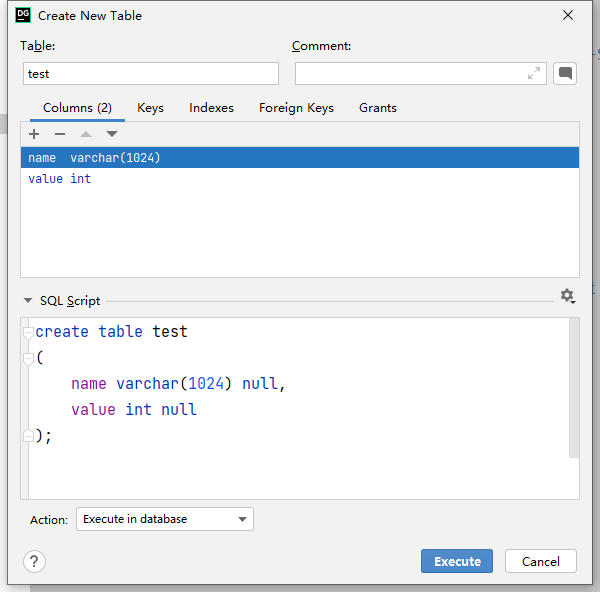
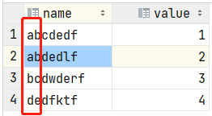
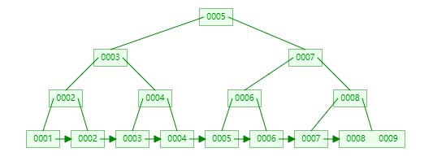

索引的基本原理
索引用来快速地寻找具有特定值的记录。如果没有索引，一般来说执行查询时会遍历整张表。
原理：就是把无序的数据变成有序的查询
- 把创建了索引的列的内容进行排序
- 对排序结果生成倒排表
- 在倒排表内容上拼上数据地址链
- 在查询的时候，先拿到倒排表内容，再取出数据地址链，从而拿出具体数据
索引设计的原则
查询更快，占用空间更小
- 代码先行，索引后上。在实际开发中，不是意味着建表的同时就要同步创建索引，我们可以在等主体功能开发完成后，把表相关SQL拿出来进行分析，然后根据分析结果再决定如何创建索引。
- 联合索引尽量覆盖条件。可以设计一个或者两三个联合索引，将SQL语句中的where、order by、group by涉及到的字段都包含在内，并且在字段顺序上要尽量满足最左前缀原则。
- 基数较小的列，索引效果较差，没有必要在此列建立索引，（如性别、男女未知、最多就三种，就算表中有100万的数据，但是其值最多就是三种，那么该字段的基数就是3）
- 尽量对字段类型较小的列设计索引，比如说什么
tinyint之类的，因为字段类型较小的话，占用磁盘空间也会 比较小，此时你在搜索的时候性能也会比较好一点。 当然，这个所谓的字段类型小一点的列，也不是绝对的，很多时候你就是要针对varchar(255)这种字段建立 索引，哪怕多占用一些磁盘空间也是有必要的。 对于这种varchar(255)的大字段可能会比较占用磁盘空间，可以稍微优化下，比如针对这个字段的前20个 字符建立索引，就是说，对这个字段里的每个值的前20个字符放在索引树里，类似于KEY index(name(20),age,position)。 此时你在where条件里搜索的时候，如果是根据name字段来搜索，那么此时就会先到索引树里根据name 字段的前20个字符去搜索，定位到之后前20个字符的前缀匹配的部分数据之后，再回到聚簇索引提取出来 完整的name字段值进行比对。 但是假如你要是order by name，那么此时你的name因为在索引树里仅仅包含了前20个字符，所以这个排 序是没法用上索引的，group by也是同理。所以这里大家要对前缀索引有一个了解。 - where与order by冲突时优先where，涉及索引时where和order by索引冲突时我们优先给where中的字段添加索引，因为在查询中where使用索引进行筛选能快速选出一部分数据，然后将筛选的数据进行排序，这样成本会小很多
- 使用短索引
- 不要过度索引
- 定义有外键的数据列一定要建立索引
- 更新频繁的字段不适合创建索引
- 尽量扩展索引，不要新建索引
- 对于查询中很少涉及的列、重复值比较多的列不适合建立索引
- 对于定义为text、image和bit的数据类型的列不要建立索引
前缀索引
当字段内容是很长的字符时，这个时候我们一般不建议直接创建索引，但是这样查询效率会比较慢，直接创建索引又会占用较大的空间，同时创建了这个索引也未必能加快查询效率，这个时候我们就可以考虑给该字段添加前缀索引。
所谓的前缀索引就是前面几个字母作为索引，但是要注意降低索引的重复率。
我们先看一下前缀索引的创建语句
1 | alter table test add key(name(4)); |
可以看出这个创建语句还是和我们普通创建索引没有多大的区别，关键在于name(4)这个中的4我们应该如何确定，这就和我们上面说到的重复率有关了。
我们拿一张简单的表来举例说明


查看数据重复率
1 | # 对全表数据中的name进行重复率检查，如果所有数据完全不一致，这个最终的运行结果肯定为1 |
通过上面的两个SQL我们改变x的值内容，这里说明一下，这个重复率势必是越接近1越好，不过我们也要考虑x的值越大也会导致索引越大的，这个我们要将x的值控制在合理的区间内。
最左前缀原则
这个主要指的是联合索引中，比如有一个联合索引，a、b、c。那么查询时索引匹配也是根据这个顺序来进行匹配，先进行a的匹配查询，查询到之后匹配b，最终再匹配c。如果我们在where查询条件中条件顺序为select a,b,c from table where a ... and b ... and c ...，这样的查询肯定会走我们的联合索引进行查询。
b+ 树的数据项是复合的数据结构，比如 (name,age,sex) 的时候，b+ 树是按照从左到右的顺序来建立搜索树的，比如当 (张三,20,F) 这样的数据来检索的时候，b+ 树会优先比较 name 来确定下一步的所搜方向，如果 name 相同再依次比较 age 和 sex，最后得到检索的数据；但当 (20,F) 这样的没有 name 的数据来的时候，b+ 树就不知道第一步该查哪个节点，因为建立搜索树的时候 name 就是第一个比较因子，必须要先根据 name 来搜索才能知道下一步去哪里查询
比如当 (张三, F) 这样的数据来检索时，b+ 树可以用 name 来指定搜索方向，但下一个字段 age 的缺失，所以只能把名字等于张三的数据都找到，然后再匹配性别是 F 的数据了， 这个是非常重要的性质，即索引的最左匹配特性。（这种情况无法用到联合索引）
MySQL索引的数据结构，各自优劣
索引的数据结果和具体存储引擎的实现有关，在MySQL使用较多的索引有Hash索引，B+树索引等。
InnoDB存储引擎的默认索引实现为：B+树索引
对于哈希索引来说，底层数据结构是哈希表
绝大多数需求为单条记录查询的时候，可以选择哈希索引，查询性能最快；其余大部分场景，建议选择B+树索引。
B+树
B+树是一个平衡的多叉树，从根节点到每个叶子节点的高度差不超过1，而且同层级的节点间有指针相互链接。
常规检索，从根节点到叶子节点的搜索效率基本相当，不会出现大幅波动，而且基于索引的顺序扫描时，也可以利用双向指针快速左右移动，效率非常高。因此，B+树被广泛应用于数据库，文件系统等场景。
数据结构动态演示网站：
1 | https://www.cs.usfca.edu/~galles/visualization/Algorithms.html |

哈希索引
如果是等值查询，那么哈希索引具有绝对的优势，因为只需要经过一次算法即可找到相应的键值；前提是键值都是唯一的。如果键值不是唯一的，那么就需要先找到该键所在的位置，然后再根据链表往后扫描，直到找到相应的数据（哈希冲突）
如果是范围检索，那么就无法使用哈希索引了，因为做范围查找，排序是前提，但是经过hash算法后，有可能就变得不连续了，索引也就没用了。
哈希索引也不支持多列联合索引的最左匹配规则；
B+树索引的关键字检索效率比较平均，不像B树那样波动幅度大，在有大量重复键值情况下，哈希索引的效率也是极低的，因为存在哈希碰撞问题。

...
...
Copyright 2021 sunfy.top ALL Rights Reserved